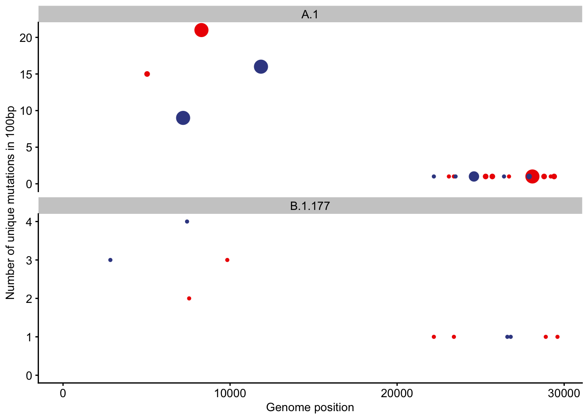
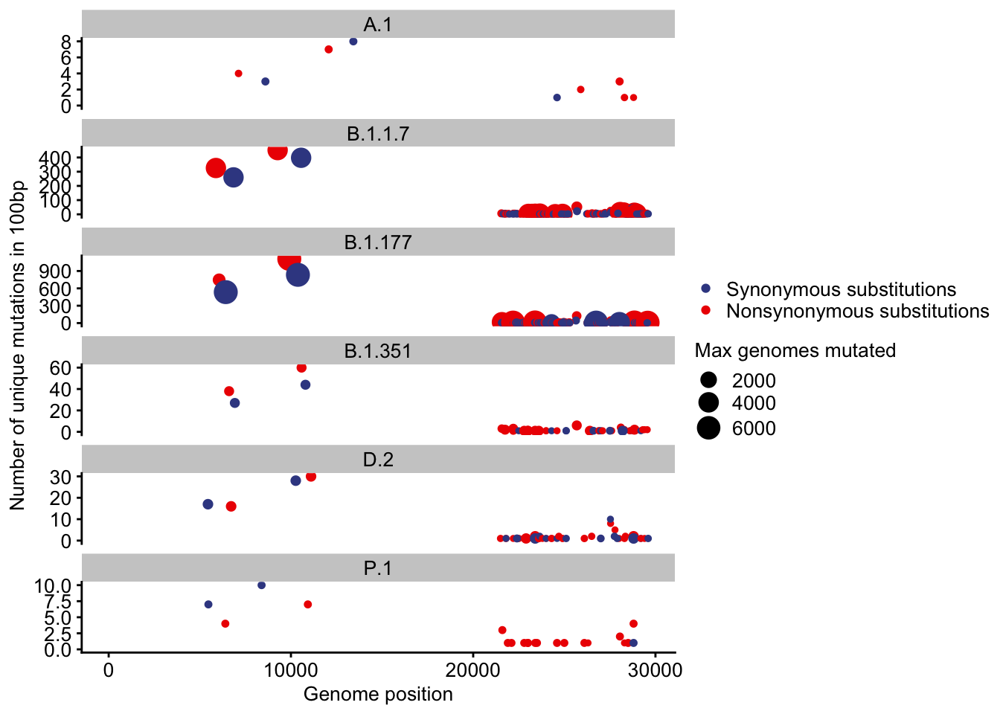

Last updated: 2021-06-28
Checks: 6 1
Knit directory: sars-cov2-gisaid/
This reproducible R Markdown analysis was created with workflowr (version 1.6.2). The Checks tab describes the reproducibility checks that were applied when the results were created. The Past versions tab lists the development history.
The R Markdown is untracked by Git. To know which version of the R Markdown file created these results, you’ll want to first commit it to the Git repo. If you’re still working on the analysis, you can ignore this warning. When you’re finished, you can run wflow_publish to commit the R Markdown file and build the HTML.
Great job! The global environment was empty. Objects defined in the global environment can affect the analysis in your R Markdown file in unknown ways. For reproduciblity it’s best to always run the code in an empty environment.
The command set.seed(20210408) was run prior to running the code in the R Markdown file. Setting a seed ensures that any results that rely on randomness, e.g. subsampling or permutations, are reproducible.
Great job! Recording the operating system, R version, and package versions is critical for reproducibility.
Nice! There were no cached chunks for this analysis, so you can be confident that you successfully produced the results during this run.
Great job! Using relative paths to the files within your workflowr project makes it easier to run your code on other machines.
Great! You are using Git for version control. Tracking code development and connecting the code version to the results is critical for reproducibility.
The results in this page were generated with repository version 790cc80. See the Past versions tab to see a history of the changes made to the R Markdown and HTML files.
Note that you need to be careful to ensure that all relevant files for the analysis have been committed to Git prior to generating the results (you can use wflow_publish or wflow_git_commit). workflowr only checks the R Markdown file, but you know if there are other scripts or data files that it depends on. Below is the status of the Git repository when the results were generated:
Ignored files:
Ignored: .DS_Store
Ignored: .Rhistory
Ignored: .Rproj.user/
Ignored: analysis/.Rhistory
Ignored: data/.DS_Store
Untracked files:
Untracked: analysis/1_working_with_the_data.snpeff.v2.gisaid_v2.0.rmd
Untracked: analysis/2_human_lineage_mutations.snpeff.v1.rmd
Untracked: analysis/2_human_lineage_mutations.snpeff.v2.rmd
Untracked: analysis/S0_creating_data_bywindows_lineages.Rmd
Untracked: analysis/S0_creating_data_bywindows_lineages_byphase.Rmd
Untracked: analysis/S1_adding_covariates_multiple_lineage_early_late.Rmd
Untracked: analysis/S1_adding_covariates_multiple_lineage_period2.Rmd
Untracked: analysis/S2_mutations_counts_covs_exploration_visuals.Rmd
Untracked: analysis/S2_mutations_counts_covs_exploration_visuals_period2.Rmd
Untracked: analysis/S4_mutation_counts_models_period2.Rmd
Untracked: code/make_debug_miniature_dataset.R
Untracked: code/make_genome_positions.R
Untracked: data/2021-04-09/
Untracked: data/2021-06-18/
Untracked: data/MutCounts_with_covariates.csv
Untracked: data/proteins_sarscov2_genome_positions.rds
Untracked: how_to_work_together.md
Untracked: output/data_100pb_pangolin_period1.rds
Untracked: output/data_100pb_pangolin_period1_withCovs.rds
Untracked: output/data_100pb_pangolin_period2.rds
Untracked: output/data_100pb_pangolin_period2_withCovs.rds
Untracked: output/data_100pb_pangolin_period3.rds
Unstaged changes:
Modified: README.md
Modified: _workflowr.yml
Modified: analysis/about.Rmd
Modified: analysis/index.Rmd
Modified: code/README.md
Modified: data/README.md
Modified: output/README.md
Note that any generated files, e.g. HTML, png, CSS, etc., are not included in this status report because it is ok for generated content to have uncommitted changes.
There are no past versions. Publish this analysis with wflow_publish() to start tracking its development.
# data_path <- "data/2021-04-09/" # depreacted in the worlfklowr project
data_path <- "data/2021-06-18/"library(tidyverse)
library(cowplot) # For theme
library(lubridate)
library(ggsci)
library(ggrepel)
text_base_size <- 10 # in pt
ggplot_text_size <- text_base_size / ggplot2::.pt
# Now use: geom_text(..., size = ggplot_text_size)
theme_set(theme_cowplot(font_size = text_base_size,
rel_small = 1, rel_tiny = 1,
rel_large = 1))
mutations <- read_rds(paste(data_path, "/mutations_snpeff_annotated_tidy_300K_downsampled.rds", sep=""))
metadata <- read_rds(paste(data_path, "/metadata_snpeff_tidy_300K_downsampled.rds",sep=""))
genomes_md <- metadata %>%
# left_join(phylogeny_md) %>% #now obsolete as we have a single metadata rds
mutate(date = ymd(date)) %>%
filter(species %in% c("Human", "Mink")) %>%
mutate(date_sub = str_sub(date,1,4)) %>%
filter(date_sub %in% c("2019","2020","2021")) %>%
{.}names(metadata) [1] "id" "Virus name"
[3] "Type" "Accession ID"
[5] "Collection date" "Location"
[7] "region" "country"
[9] "division" "Additional location information"
[11] "Sequence length" "Host"
[13] "Patient age" "Gender"
[15] "Clade" "pangolin_lineage"
[17] "Pangolin version" "Variant"
[19] "AA Substitutions" "date_submitted"
[21] "Is reference?" "Is complete?"
[23] "Is high coverage?" "Is low coverage?"
[25] "N-Content" "GC-Content"
[27] "species" "date"
[29] "Patient status" "Passage"
[31] "Specimen" "Additional host information"
[33] "Lineage" "Sampling strategy"
[35] "Last vaccinated" "count_N"
[37] "count_S" dim(genomes_md) #current size of the genomes_md.[1] 292690 38names(genomes_md) [1] "id" "Virus name"
[3] "Type" "Accession ID"
[5] "Collection date" "Location"
[7] "region" "country"
[9] "division" "Additional location information"
[11] "Sequence length" "Host"
[13] "Patient age" "Gender"
[15] "Clade" "pangolin_lineage"
[17] "Pangolin version" "Variant"
[19] "AA Substitutions" "date_submitted"
[21] "Is reference?" "Is complete?"
[23] "Is high coverage?" "Is low coverage?"
[25] "N-Content" "GC-Content"
[27] "species" "date"
[29] "Patient status" "Passage"
[31] "Specimen" "Additional host information"
[33] "Lineage" "Sampling strategy"
[35] "Last vaccinated" "count_N"
[37] "count_S" "date_sub" head(genomes_md) %>% knitr::kable(digits = 3)| id | Virus name | Type | Accession ID | Collection date | Location | region | country | division | Additional location information | Sequence length | Host | Patient age | Gender | Clade | pangolin_lineage | Pangolin version | Variant | AA Substitutions | date_submitted | Is reference? | Is complete? | Is high coverage? | Is low coverage? | N-Content | GC-Content | species | date | Patient status | Passage | Specimen | Additional host information | Lineage | Sampling strategy | Last vaccinated | count_N | count_S | date_sub |
|---|---|---|---|---|---|---|---|---|---|---|---|---|---|---|---|---|---|---|---|---|---|---|---|---|---|---|---|---|---|---|---|---|---|---|---|---|---|
| 1578694 | hCoV-19/Norway/5612/2021 | betacoronavirus | EPI_ISL_1578694 | 2021-03-02 | Europe / Norway / More og Romsdal | Europe | Norway | More og Romsdal | NA | 29809 | Human | unknown | unknown | GRY | B.1.1.7 | 2021-06-05 | NA | (Spike_H69del,NS8_Q27stop,NSP3_T183I,Spike_T716I,NSP6_S106del,N_R203K,Spike_A570D,NSP13_K460R,NSP13_P78S,Spike_N501Y,NSP3_I1412T,NS8_R52I,Spike_P681H,Spike_Y144del,NS8_P93T,NSP6_G107del,NSP3_A890D,Spike_D1118H,NS3_P42H,NSP6_F108del,NS8_Y73C,N_G204R,Spike_V70del,NSP1_H81Y,NSP12_P323L,Spike_D614G,N_D3L,Spike_S982A,N_S235F) | 2021-04-13 | NA | TRUE | TRUE | NA | 0.002 | 0.380 | Human | 2021-03-02 | NA | NA | NA | NA | NA | NA | NA | 24 | 8 | 2021 |
| 741336 | hCoV-19/England/LOND-12E8625/2020 | betacoronavirus | EPI_ISL_741336 | 2020-12-15 | Europe / United Kingdom / England | Europe | United Kingdom | England | NA | 29849 | Human | unknown | unknown | GV | B.1.177.19 | 2021-06-15 | NA | (NSP3_A1736V,Spike_E583D,NSP3_P1228L,NSP12_P323L,Spike_D614G,N_A252S,NSP10_P136S,N_A220V,NSP3_G282S,Spike_A222V) | 2020-12-29 | NA | TRUE | TRUE | NA | 0.010 | 0.379 | Human | 2020-12-15 | NA | NA | NA | NA | NA | NA | NA | 11 | 9 | 2020 |
| 437722 | hCoV-19/Saudi Arabia/KAUST-Makkah225/2020 | betacoronavirus | EPI_ISL_437722 | 2020-04-06 | Asia / Saudi Arabia / Makkah | Asia | Saudi Arabia | Makkah | NA | 29903 | Human | 42 | Male | S | A | 2021-06-15 | NA | (N_S202N,NS8_L84S) | 2020-05-11 | NA | TRUE | TRUE | NA | NA | 0.380 | Human | 2020-04-06 | NA | NA | NA | NA | NA | NA | NA | 0 | 0 | 2020 |
| 1353089 | hCoV-19/Germany/BE-RKI-I-045665/2021 | betacoronavirus | EPI_ISL_1353089 | 2021-02-18 | Europe / Germany / Berlin | Europe | Germany | Berlin | NA | 29660 | Human | unknown | unknown | GV | B.1.177.86 | 2021-06-05 | NA | (NS7b_E39stop,Spike_L18F,N_D377Y,NSP2_L501F,NSP12_P323L,Spike_D614G,N_A220V,NS7a_T120I,Spike_A222V) | 2021-03-25 | NA | TRUE | TRUE | NA | 0.000 | 0.379 | Human | 2021-02-18 | NA | NA | NA | NA | NA | NA | NA | 9 | 10 | 2021 |
| 1924016 | hCoV-19/USA/FL-CDC-STM-000057839/2021 | betacoronavirus | EPI_ISL_1924016 | 2021-04-15 | North America / USA / Florida | North America | USA | Florida | NA | 29809 | Human | 26 | Female | GRY | B.1.1.7 | 2021-06-15 | NA | (Spike_H69del,NS8_Q27stop,NSP3_T183I,Spike_T716I,NSP6_S106del,N_R203K,Spike_A570D,Spike_N501Y,NSP3_I1412T,NS8_R52I,Spike_P681H,Spike_Y144del,Spike_S98F,NSP2_L550F,Spike_D138H,NSP6_G107del,NSP3_A890D,Spike_D1118H,NSP6_F108del,NS8_Y73C,N_G204R,Spike_V70del,NSP12_P323L,Spike_D614G,N_D3L,Spike_S982A,N_S235F) | 2021-05-06 | NA | TRUE | TRUE | NA | NA | 0.380 | Human | 2021-04-15 | NA | NA | NA | NA | NA | NA | NA | 22 | 7 | 2021 |
| 2125949 | hCoV-19/Germany/SL-RKI-I-142044/2021 | betacoronavirus | EPI_ISL_2125949 | 2021-04-26 | Europe / Germany / Saarland | Europe | Germany | Saarland | NA | 29854 | Human | unknown | unknown | GRY | B.1.1.7 | 2021-06-15 | NA | (Spike_H69del,NS8_Q27stop,NSP3_T183I,Spike_T716I,NSP6_S106del,N_R203K,Spike_A570D,Spike_N501Y,NSP3_I1412T,NS8_R52I,Spike_P681H,Spike_Y144del,NSP6_G107del,NSP3_A890D,Spike_D1118H,NSP6_F108del,NS8_Y73C,N_G204R,Spike_V70del,NSP12_P323L,Spike_D614G,N_D3L,Spike_S982A,N_S235F) | 2021-05-17 | NA | TRUE | TRUE | NA | 0.000 | 0.380 | Human | 2021-04-26 | NA | NA | NA | NA | NA | NA | NA | 19 | 8 | 2021 |
(Note, here or in the /data/Readme.md, provide details for the data source of output/proteins_sarscov2_genome_positions.rds )
gene_positions_md <-readRDS("data/proteins_sarscov2_genome_positions.rds")
gene_positions_md %>% arrange(start_pos) %>%knitr::kable()| name | start_pos | end_pos | gene_length |
|---|---|---|---|
| leader | 266 | 806 | 540 |
| nsp2 | 806 | 2720 | 1914 |
| nsp3 | 2720 | 8555 | 5835 |
| nsp4 | 8555 | 10055 | 1500 |
| proteinase | 10055 | 10973 | 918 |
| nsp6 | 10973 | 11843 | 870 |
| nsp7 | 11843 | 12092 | 249 |
| nsp8 | 12092 | 12686 | 594 |
| nsp9 | 12686 | 13025 | 339 |
| nsp10 | 13025 | 13442 | 417 |
| nsp11 | 13442 | 13481 | 39 |
| RDRp | 13442 | 16238 | 2796 |
| helicase | 16237 | 18040 | 1803 |
| exonuclease | 18040 | 19621 | 1581 |
| endoRNAse | 19621 | 20659 | 1038 |
| methyltransferase | 20659 | 21550 | 891 |
| S | 21563 | 25382 | 3819 |
| orf3a | 25393 | 26218 | 825 |
| E | 26245 | 26470 | 225 |
| M | 26523 | 27189 | 666 |
| orf6 | 27202 | 27385 | 183 |
| orf7a | 27394 | 27757 | 363 |
| orf7b | 27756 | 27885 | 129 |
| orf8 | 27894 | 28257 | 363 |
| N | 28274 | 29531 | 1257 |
| orf10 | 29558 | 29672 | 114 |
Split into 100 bp windows in genome I position bins according to the gene starts to get a position_bin that in principle should match the ones computed by Susan in the co-variate files : genome_bin gives genomic windows numbered consecutively 1, 2, 3… window_start provides the genomic coordinate of each genome_bin Finally gene_bin renames consecutively the windows 1,2, 3, … within each gene.
Having both coordinate system allows - in principle - to retain some level of sanity while juggling with the co-variates (see following script S1 for aggregating all co-variates compiled during the summer):
names(mutations) [1] "id" "CHROM" "position" "ref_base" "variant_base"
[6] "gene" "biotype" "impact" "effect" "hgvs_c"
[11] "hgvs_p" "aa_position" "type" "aa_change" names(genomes_md) [1] "id" "Virus name"
[3] "Type" "Accession ID"
[5] "Collection date" "Location"
[7] "region" "country"
[9] "division" "Additional location information"
[11] "Sequence length" "Host"
[13] "Patient age" "Gender"
[15] "Clade" "pangolin_lineage"
[17] "Pangolin version" "Variant"
[19] "AA Substitutions" "date_submitted"
[21] "Is reference?" "Is complete?"
[23] "Is high coverage?" "Is low coverage?"
[25] "N-Content" "GC-Content"
[27] "species" "date"
[29] "Patient status" "Passage"
[31] "Specimen" "Additional host information"
[33] "Lineage" "Sampling strategy"
[35] "Last vaccinated" "count_N"
[37] "count_S" "date_sub" names(gene_positions_md)[1] "name" "start_pos" "end_pos" "gene_length"names(gene_positions_md)[1]<-"gene" # Renaming the gene column to make it compatible with the mutation tibblemutations_annotated <- mutations %>%
left_join(genomes_md) %>%
left_join(gene_positions_md) %>%
mutate(genome_bin = position %/% 100) %>% # abs genomic numbering 1, 2, etc.
mutate(window_start = genome_bin*100) %>% # genomic coordinate
mutate(gene_bin = 1+ (position - start_pos) %/%100 ) %>% #new calculation to get the bin number within each gene
filter(!is.na(species)) %>%
{.}Joining, by = "id"Joining, by = "gene"rm(mutations)
dim(mutations_annotated)[1] 10003890 57names(mutations_annotated) [1] "id" "CHROM"
[3] "position" "ref_base"
[5] "variant_base" "gene"
[7] "biotype" "impact"
[9] "effect" "hgvs_c"
[11] "hgvs_p" "aa_position"
[13] "type" "aa_change"
[15] "Virus name" "Type"
[17] "Accession ID" "Collection date"
[19] "Location" "region"
[21] "country" "division"
[23] "Additional location information" "Sequence length"
[25] "Host" "Patient age"
[27] "Gender" "Clade"
[29] "pangolin_lineage" "Pangolin version"
[31] "Variant" "AA Substitutions"
[33] "date_submitted" "Is reference?"
[35] "Is complete?" "Is high coverage?"
[37] "Is low coverage?" "N-Content"
[39] "GC-Content" "species"
[41] "date" "Patient status"
[43] "Passage" "Specimen"
[45] "Additional host information" "Lineage"
[47] "Sampling strategy" "Last vaccinated"
[49] "count_N" "count_S"
[51] "date_sub" "start_pos"
[53] "end_pos" "gene_length"
[55] "genome_bin" "window_start"
[57] "gene_bin" pd <- tibble() %>%
bind_rows(tibble("Description" = "Genomes total",
"n" = genomes_md %>% select(id) %>% distinct() %>% count() %>% pull(n) )) %>%
bind_rows(tibble("Description" = "Genome with mutations in protein coding regions",
"n" = mutations_annotated %>% select(id) %>% distinct() %>% count() %>% pull(n) )) %>%
bind_rows(tibble("Description" = "Unique mutations total",
"n" = mutations_annotated %>% select(position, variant_base) %>% distinct() %>% count() %>% pull(n) )) %>%
bind_rows(tibble("Description" = "Synonymous mutations",
"n" = mutations_annotated %>% filter(type=="S") %>% select(position, variant_base) %>% distinct() %>% count() %>% pull(n) )) %>%
bind_rows(tibble("Description" = "Nonsynonymous mutations",
"n" = mutations_annotated %>% filter(type=="N") %>% select(position, variant_base) %>% distinct() %>% count() %>% pull(n) )) %>%
bind_rows(tibble("Description" = "Human genomes",
"n" = genomes_md %>% filter(species=="Human") %>% count() %>% pull(n) )) %>%
bind_rows(tibble("Description" = "Mink genomes",
"n" = genomes_md %>% filter(species=="Mink") %>% count() %>% pull(n) )) %>%
bind_rows(tibble("Description" = "Other genomes",
"n" = genomes_md %>% filter(!species %in% c("Human","Mink")) %>% count() %>% pull(n) )) %>%
bind_rows(tibble("Description" = "Samples with Patient status",
"n" = genomes_md %>% filter(!is.na(`Patient status`)) %>% count() %>% pull(n) )) %>%
{.}
knitr::kable(pd)| Description | n |
|---|---|
| Genomes total | 292690 |
| Genome with mutations in protein coding regions | 261159 |
| Unique mutations total | 40996 |
| Synonymous mutations | 14293 |
| Nonsynonymous mutations | 26707 |
| Human genomes | 292561 |
| Mink genomes | 129 |
| Other genomes | 0 |
| Samples with Patient status | 2789 |
mutations_annotated %>%
#group_by(name,type, position) %>% # Unique positions
group_by(pangolin_lineage,type, position, ref_base, variant_base) %>% # Unique mutations
summarise(genomes_mutated=n()) %>%
ungroup() %>%
group_by(pangolin_lineage) %>%
summarise(total = sum(genomes_mutated),
N = sum(type=="N"),
S = sum(type=="S"),
NS = N/S) %>%
arrange(desc(total)) %>%
slice(1:25) %>% # keep only the top of the distribution
knitr::kable()`summarise()` regrouping output by 'pangolin_lineage', 'type', 'position', 'ref_base' (override with `.groups` argument)`summarise()` ungrouping output (override with `.groups` argument)| pangolin_lineage | total | N | S | NS |
|---|---|---|---|---|
| B.1.1.7 | 6085928 | 17897 | 10987 | 1.628925 |
| B.1.2 | 407923 | 7502 | 5139 | 1.459817 |
| B.1.617.2 | 387066 | 3239 | 1947 | 1.663585 |
| B.1.177 | 247517 | 5022 | 3297 | 1.523203 |
| P.1 | 219023 | 3163 | 2171 | 1.456932 |
| B.1.526 | 160159 | 3103 | 2212 | 1.402803 |
| B.1.160 | 122481 | 2694 | 1802 | 1.495005 |
| B.1.1.519 | 102089 | 2734 | 1845 | 1.481843 |
| B.1.351 | 92140 | 2026 | 1475 | 1.373559 |
| B.1.1.214 | 89580 | 1533 | 1056 | 1.451704 |
| B.1 | 89521 | 4922 | 3158 | 1.558581 |
| B.1.429 | 84458 | 2266 | 1610 | 1.407453 |
| B.1.1 | 67828 | 3773 | 2605 | 1.448368 |
| B.1.427/429 | 62126 | 1618 | 1184 | 1.366554 |
| B.1.221 | 61805 | 1834 | 1314 | 1.395738 |
| B.1.258 | 61530 | 2092 | 1489 | 1.404970 |
| B.1.1.284 | 51438 | 743 | 531 | 1.399247 |
| B.1.427 | 50621 | 1492 | 1112 | 1.341727 |
| B.1.596 | 39023 | 1582 | 1062 | 1.489642 |
| B.1.258.17 | 38364 | 935 | 664 | 1.408133 |
| B.1.177.21 | 38180 | 522 | 370 | 1.410811 |
| R.1 | 37780 | 929 | 717 | 1.295676 |
| B.1.243 | 34727 | 1635 | 1126 | 1.452043 |
| B.1.177.12 | 34652 | 357 | 253 | 1.411067 |
| B.1.525 | 28701 | 777 | 540 | 1.438889 |
An overview of the top 25 lineages size
genomes_md %>%
group_by(pangolin_lineage) %>%
summarize( n_genomes = n()) %>%
arrange(-n_genomes) %>%
slice(1:25) %>%
knitr::kable()`summarise()` ungrouping output (override with `.groups` argument)| pangolin_lineage | n_genomes |
|---|---|
| B.1.1.7 | 138798 |
| B.1.2 | 12837 |
| B.1.177 | 10783 |
| B.1 | 10218 |
| B.1.617.2 | 9270 |
| B.1.1 | 6323 |
| B.1.526 | 5108 |
| P.1 | 4730 |
| B.1.160 | 3629 |
| B.1.1.214 | 3195 |
| B.1.1.519 | 2996 |
| B.1.351 | 2809 |
| B.1.429 | 2401 |
| B.1.221 | 2142 |
| B.1.258 | 2051 |
| D.2 | 1848 |
| B.1.1.284 | 1731 |
| B.1.427 | 1682 |
| B.1.427/429 | 1562 |
| R.1 | 1506 |
| B.1.243 | 1492 |
| B.1.177.21 | 1372 |
| B.1.596 | 1362 |
| B.1.177.12 | 1150 |
| B.1.258.17 | 1030 |
genomes_md %>%
group_by(pangolin_lineage) %>%
summarize( n_genomes = n()) %>%
arrange(-n_genomes) %>%
slice(1:25) -> top25pangolin `summarise()` ungrouping output (override with `.groups` argument)Note this new version: referencing according to Susan data integrataion We select a subset of lineages to_extract:
to_extract<-c("B.1.177", "B.1.5", "D.2", "A.1", "B.1.1.7", "B.1.351", "P.1")AS check we extract sets of genomes mayching the two time periods of Angela’s original parse we keep wins having up to 1 mutation.
data100 <- mutations_annotated %>%
filter(species=="Human") %>%
filter(date < "2020-04-01") %>%
filter(pangolin_lineage %in% to_extract) %>% # update
group_by(pangolin_lineage, gene, gene_bin, window_start, position, variant_base, type, aa_change) %>%
summarise(genomes_mutated=n()) %>% # Number of genomes mutated pr single mutation
filter(genomes_mutated >= 1) %>% # KEEP singletons
group_by(pangolin_lineage, gene, gene_bin, type) %>%
summarise(unique_mutations = n(),
max_genomes_mutated=max(genomes_mutated),
window_start = mean(window_start)) # Count number of sites mutated pr window`summarise()` regrouping output by 'pangolin_lineage', 'gene', 'gene_bin', 'window_start', 'position', 'variant_base', 'type' (override with `.groups` argument)`summarise()` regrouping output by 'pangolin_lineage', 'gene', 'gene_bin' (override with `.groups` argument)data100 <- data100 %>%
mutate(type=factor(type)) %>%
mutate(type = fct_recode(type,"Synonymous substitutions"="S", "Nonsynonymous substitutions"="N")) %>%
mutate(type = fct_relevel(type, "Synonymous substitutions"))Check that we have the lineages we wanted to extract
dim(data100)[1] 28 7unique(data100$pangolin_lineage) %in% to_extract[1] TRUE TRUEggplot(data100, aes(x=window_start, y=unique_mutations, size=max_genomes_mutated, color=type)) +
geom_point() +
ylim(c(0,NA)) +
xlim(c(0,NA)) +
xlab("Genome position") +
ylab("Number of unique mutations in 100bp") +
scale_color_aaas(name="") +
scale_size("Max genomes mutated", range=c(1,5)) +
facet_wrap(~ pangolin_lineage, ncol = 1, scales = "free_y")+
theme(legend.position = "none")+
# theme(legend.position = c(0.5,1),legend.justification = c(0.5,1))+
# theme(legend.box.background = element_rect(fill="#F0F0F0")) +
NULL
saveRDS(data100, "output/data_100pb_pangolin_period1.rds")data100 <- mutations_annotated %>%
filter(species=="Human") %>%
filter(date >= "2020-04-01") %>%
filter(date < "2020-12-31") %>%
filter(pangolin_lineage %in% to_extract) %>% # update
group_by(pangolin_lineage, gene, gene_bin, window_start, position, variant_base,type, aa_change) %>%
summarise(genomes_mutated=n()) %>% # Number of genomes mutated pr single mutation
filter(genomes_mutated > 1) %>% # IGNORE singletons
group_by(pangolin_lineage, gene, gene_bin, type) %>%
summarise(unique_mutations = n(),
max_genomes_mutated=max(genomes_mutated),
window_start = mean(window_start)) # Count number of sites mutated pr window`summarise()` regrouping output by 'pangolin_lineage', 'gene', 'gene_bin', 'window_start', 'position', 'variant_base', 'type' (override with `.groups` argument)`summarise()` regrouping output by 'pangolin_lineage', 'gene', 'gene_bin' (override with `.groups` argument)data100 <- data100 %>%
mutate(type=factor(type)) %>%
mutate(type = fct_recode(type,"Synonymous substitutions"="S", "Nonsynonymous substitutions"="N")) %>%
mutate(type = fct_relevel(type, "Synonymous substitutions"))
ggplot(data100, aes(x=window_start, y=unique_mutations, size=max_genomes_mutated, color=type)) +
geom_point() +
ylim(c(0,NA)) +
xlim(c(0,NA)) +
xlab("Genome position") +
ylab("Number of unique mutations in 100bp") +
scale_color_aaas(name="") +
scale_size("Max genomes mutated", range=c(1,5)) +
facet_wrap(~ pangolin_lineage, ncol = 1, scales = "free_y")+
# theme(legend.position = c(0.5,1),legend.justification = c(0.5,1))+
# theme(legend.box.background = element_rect(fill="#F0F0F0")) +
NULL
unique(data100$pangolin_lineage)[1] "A.1" "B.1.1.7" "B.1.177" "B.1.351" "D.2" "P.1" table(data100$pangolin_lineage)
A.1 B.1.1.7 B.1.177 B.1.351 D.2 P.1
9 124 136 42 45 21 saveRDS(data100, "output/data_100pb_pangolin_period2.rds")
sessionInfo()R version 4.0.2 (2020-06-22)
Platform: x86_64-apple-darwin17.0 (64-bit)
Running under: macOS Catalina 10.15.7
Matrix products: default
BLAS: /Library/Frameworks/R.framework/Versions/4.0/Resources/lib/libRblas.dylib
LAPACK: /Library/Frameworks/R.framework/Versions/4.0/Resources/lib/libRlapack.dylib
locale:
[1] en_US.UTF-8/en_US.UTF-8/en_US.UTF-8/C/en_US.UTF-8/en_US.UTF-8
attached base packages:
[1] stats graphics grDevices utils datasets methods base
other attached packages:
[1] ggrepel_0.9.1 ggsci_2.9 lubridate_1.7.9 cowplot_1.1.0
[5] forcats_0.5.0 stringr_1.4.0 dplyr_1.0.2 purrr_0.3.4
[9] readr_1.3.1 tidyr_1.1.1 tibble_3.0.3 ggplot2_3.3.2
[13] tidyverse_1.3.0
loaded via a namespace (and not attached):
[1] tidyselect_1.1.0 xfun_0.16 haven_2.3.1 colorspace_1.4-1
[5] vctrs_0.3.2 generics_0.0.2 htmltools_0.5.0 yaml_2.2.1
[9] blob_1.2.1 rlang_0.4.7 later_1.1.0.1 pillar_1.4.6
[13] withr_2.2.0 glue_1.4.1 DBI_1.1.0 dbplyr_1.4.4
[17] modelr_0.1.8 readxl_1.3.1 lifecycle_0.2.0 munsell_0.5.0
[21] gtable_0.3.0 workflowr_1.6.2 cellranger_1.1.0 rvest_0.3.6
[25] evaluate_0.14 labeling_0.3 knitr_1.29 httpuv_1.5.4
[29] fansi_0.4.1 highr_0.8 broom_0.7.0 Rcpp_1.0.5
[33] promises_1.1.1 backports_1.1.9 scales_1.1.1 jsonlite_1.7.1
[37] farver_2.0.3 fs_1.5.0 hms_0.5.3 digest_0.6.25
[41] stringi_1.4.6 rprojroot_2.0.2 grid_4.0.2 cli_2.0.2
[45] tools_4.0.2 magrittr_1.5 crayon_1.3.4 pkgconfig_2.0.3
[49] ellipsis_0.3.1 xml2_1.3.2 reprex_0.3.0 assertthat_0.2.1
[53] rmarkdown_2.3 httr_1.4.2 rstudioapi_0.11 R6_2.4.1
[57] git2r_0.27.1 compiler_4.0.2